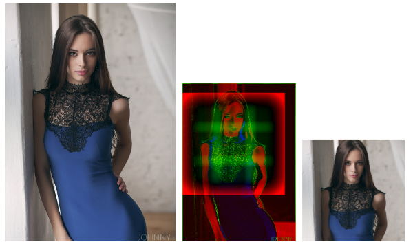

今天将为大家介绍一款近期github上很不错的开源库 – smartcrop.js。 它是一款图片处理的智能裁剪库。在很多项目开发中，经常会遇见上传图片的场景，它可能是用户照片信息，也可能是商品图片等。然而在网页布局中，为了更好的 用户体验，它们往往都需要一些宽度和高度的限制。对于不合适的图片，常常需要为用户提供一种裁剪方式，以此来满足网站更好的用户体验。但是图片默认的裁剪 区域往往被显示在一个固定的位置，而这个位置却往往又不是精准的用户裁剪位置。因此今天为大家介绍的这一款开源库，就是为了解决这类问题，并为用户提供更 好的用户体验的。
首先我们可以使用npm install smartcrop或者bower install smartcrop来下载它。然后像如下方式使用它：
SmartCrop.crop(image, {
width: 100,
height: 100
},
function(result){
console.log(result); // {topCrop: {x: 300, y: 200, height: 200, width: 200}}
});
它会输出一个比较好的最佳图片裁剪位置，如{topCrop: {x: 300, y: 200, height: 200, width: 200}}的数据。
下面是一副来自它的展示网站的案例，请欣赏：

更多案例：
- http://29a.ch/sandbox/2014/smartcrop/examples/testsuite.html：这里拥有超过1000个图片效果的展示（流量用户请谨慎点击，图片众多）；
- http://29a.ch/sandbox/2014/smartcrop/examples/testbed.html：这里允许上传本地的图片，并体验其效果；
- http://29a.ch/sandbox/2014/smartcrop/examples/slideshow.html：在这里可以尝试用它创建幻灯片。
最后，更多关于smartcrop.js的信息，请参见其github：https://github.com/jwagner/smartcrop.js。